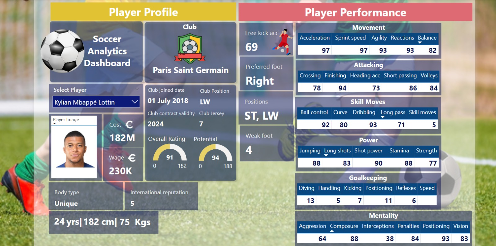

Introduction
The Football Analytics Dashboard is a comprehensive tool designed to analyze player performance, team formations, and individual skills. Powered by Power BI, this interactive dashboard provides actionable insights to coaches, analysts, and football enthusiasts.
Goals
- Provide detailed insights into player statistics and performances.
- Enable data-driven decision-making for team management and strategy planning.
- Visualize player attributes and team formations in an intuitive way.
Features of the Dashboard
The Football Analytics Dashboard offers the following functionalities:
- Interactive player selection and skill comparison.
- Visual representation of team formations and player roles.
- Detailed insights into attributes like dribbling, passing, shooting, and overall performance.
Key Insights
Some key insights derived from the dashboard include:
- Top-performing players with the highest overall ratings and potential.
- Identification of strengths and weaknesses within teams and individual players.
- Dynamic team formation layouts highlighting player contributions.
Visualizations
Figure: Player Profile Dashboard
Figure: Metrics across various positions Dashboard
Conclusion
The Football Analytics Dashboard offers an intuitive and data-driven perspective on football performance metrics. It enables users to explore individual player skills, team dynamics, and strategic insights, making it an essential tool for informed decision-making in the football ecosystem.